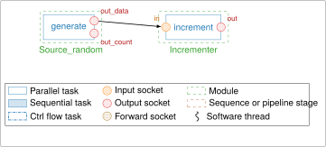
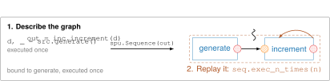
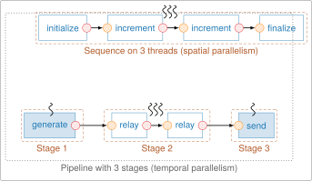

Concepts¶
This page explains the model behind StreamPU and how it appears in Python. The tutorial shows the same notions through examples.
The building blocks¶
StreamPU describes a streaming application as a data-flow graph:
| Notion | Role | Python class |
|---|---|---|
| Socket | holds data exchanged between tasks | spu.Socket |
| Task | a processing step: reads input sockets, writes output sockets | spu.Task |
| Module | groups tasks that share parameters and possibly a state | spu.Module and its subclasses |
| Sequence | a graph of bound tasks, executed on one or several threads | spu.Sequence |
| Pipeline | a graph split into stages that run concurrently | spu.Pipeline |

For example, spu.incrementer(8) is a module with a task increment, which reads the
socket in and writes the socket out. Each built-in module wraps a C++ class of
StreamPU; the Python objects give direct access to
the C++ objects.
Sockets¶
A socket has a name, a data type (dtype), a number of elements and
belongs to a task. These properties are fixed when the task is created.
Its direction says how the task uses it:
| Direction | spu.Socket.directions |
The task… |
|---|---|---|
| input | IN |
reads the data |
| output | OUT |
writes the data |
| forward | FWD |
reads and modifies the data in place |
Every task also has an output socket named status, where it writes its return code.
Data, frames and NumPy¶
The data of a socket is stored in a C++ buffer. Its numpy attribute is a NumPy
array that shares this buffer: modifying the array modifies the socket, and
conversely. In the same way, spu.array(np_array) does not copy np_array.
This array is 2D, with one row per frame. A task processes n_frames frames per
execution (1 by default), which is set on the modules or on a whole sequence with
n_frames. Processing several frames at once reduces the overhead of each execution.
Tasks¶
A task is executed by its exec() method, or by calling it. Its main attributes are:
| Attribute | Meaning |
|---|---|
name, module |
name of the task and module that owns it |
sockets, inputs, outputs, forwards |
its sockets, all or by direction |
debug |
print the content of the sockets at each execution |
stats, n_calls, avg_duration… |
execution statistics (see Measuring performance) |
The sockets of a task are reached by name: task["out"], task.out, or
module["task::out"] from its module.
Modules¶
A module is created by a factory function (spu.incrementer, spu.source_random,
spu.relayer…) or by a class (spu.Stateless, your own C++ classes…). Its main
attributes are name, tasks (list of its tasks) and n_frames. Its tasks are
reached by name: module["increment"] or module.increment. spu.help(module)
displays its tasks and their sockets.
Modules come in two kinds:
- stateful modules keep data between executions (a source that reads a file, a random generator…). To run on several threads they must know how to copy themselves, which is not always possible;
- stateless modules (
spu.Stateless) only depend on their input sockets and are cloned automatically.
Both kinds can be written in Python (see Writing a module in Python).
Binding¶
Binding an input (or forward) socket to an output (or forward) socket of another task makes them share the same data: the second task reads what the first one wrote, without copy. Bindings define the edges of the graph.
There are three equivalent ways to bind sockets:
inc["increment::in"] = src["generate::out_data"] # assignment
inc["increment::in"].bind(src["generate::out_data"])
out = inc.increment(src["generate::out_data"]) # call
A task can also be bound to a socket or to another task (task.bind(...)) to force
an execution order without exchanging data.
Immediate execution and replay¶
Calling a task, or using an operator on sockets (x + 1, x[::2]…), does two things:
- it binds the sockets of the task to the arguments;
- it executes the task once, so that the result is immediately available.
This makes it possible to explore the data interactively. The bindings stay in place: step by step, these calls build a graph. A sequence then captures this graph and replays it as many times as needed, possibly on several threads, without going back to Python between the tasks.

Two consequences:
- the first execution, when the graph is described, comes on top of those of the
sequence. To only describe the graph, disable it with
spu.Task.call_auto_exec = Falseorauto_exec=False; - in-place operations (
+=, forward sockets) are replayed on data that has already been modified (see A sequence replays the graph).
Sequences and pipelines¶
A sequence is built from its first tasks (or from sockets, from which StreamPU finds
the first tasks) and contains every task reachable through the bindings. On n
threads, the modules are cloned n times and each thread runs its own copy of the
graph on its own frames.
A pipeline splits the graph into stages, each stage being a sequence with its own number of threads, connected to the next one by buffers. It allows modules that cannot be cloned (sources, sinks…) to be combined with multithreaded stages.

See Building a Sequence and Running in parallel.